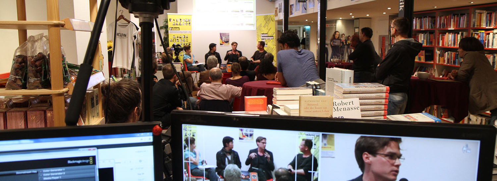
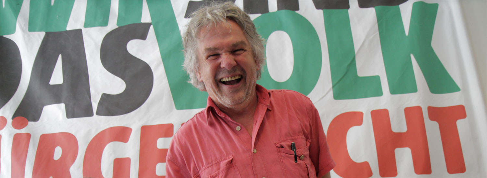
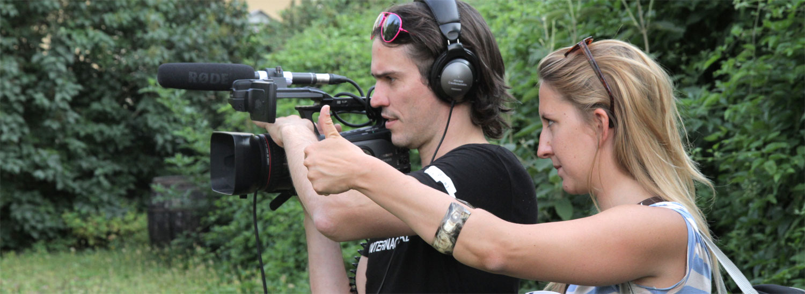

#sbsm Taalk
Live-Streaming und Aufzeichung im Rahmen des Projekts "SBSM - Soziale Bewegungen, Soziale Medien" in der ÖGB-Fachbuchhandlung
Beispiel Video

NGO Partner
Die Anliegen der Zivilgesellschaft sind uns wichtig, wir haben von Anfang an mit NGO´s und Bürgerinitiativen kooperiert und so auch so manch unmögliches Projekt realisiert.
Beispiel Zara-Talk

Modernste Technik mit Passion
Full HD 4:2:2 mit 50 Mbps - Aufzeichung und Live Streaming in Broadcast-Qualität.
Anfrage senden